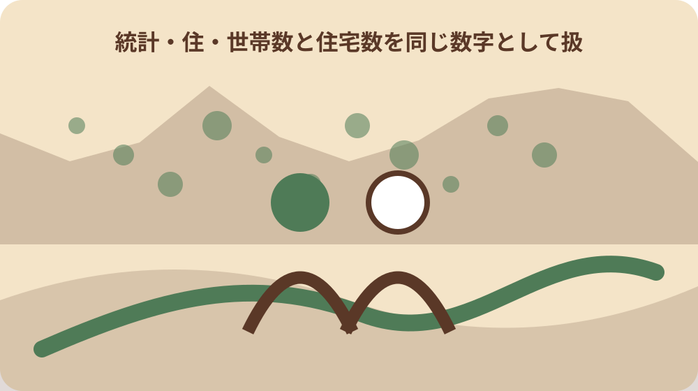
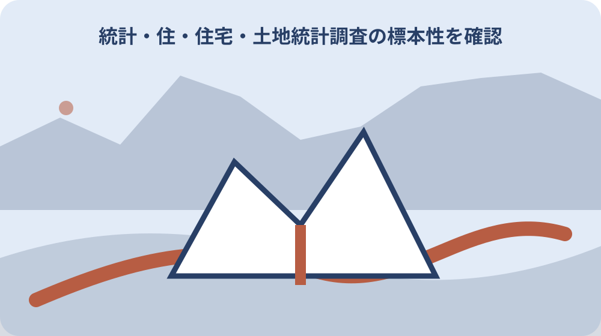

先に結論を確認する
この記事の答え：同じではありません。世帯は人のまとまり、住宅数は建物・住戸側の集計で、調査ごとに対象も異なります。
森町で最初に照合する条件：表題に住民基本台帳、国勢調査、住宅・土地統計調査のどれかを必ず記録する。
世帯の表と住宅の表を分けて開く
森町の統計令和4年度版は、人口章に世帯の家族類型別一般世帯と、一般世帯数・住居区分を別表で載せている。世帯の人数を扱う表と、住居の区分を扱う表を同じ数値列として読まない。冊子名が同じでも、表題、表番号、集計単位が違えば別の系列として扱う。読む順序は、住民基本台帳なら届出に基づく世帯と基準日、国勢調査なら普段住む場所と10月1日の期日、住宅・土地統計調査なら住宅ストックと約17分の1の標本性、森町実態調査なら2016年度または2022年度の調査条件である。四資料のどれを使ったかを数値の前に決める。世帯、一般世帯、住宅、空き家という四語は似ていても置換せず、元表の定義を保持する。調査名のない数値は比較対象から外し、原典へ戻って表題を確認する。
住宅・土地統計調査が明らかにするのは住宅数、住宅の種類・設備、居住世帯、土地保有などである。一方、国勢調査は日本に住むすべての人と世帯を対象にするため、数える単位が異なる。住宅調査の世帯項目があっても国勢調査の世帯総数と同じ表ではない。調査対象の住宅側から把握した世帯か、人と世帯を対象に把握した世帯かを区別する。森町統計の掲載章も記し、人口章と土木・建設章の値を同じ系列にしない。
比較表の列名には「世帯数」だけでなく、調査名、表番号、集計単位を書く。世帯側の数値から住宅側の数値を差し引いても、その差を空き家数とは呼べない。差を計算した資料が残っている場合は、推定値として再利用せず、分子と分母の調査名を確認して比較不能の理由と各基準日、地域範囲を注記する。
最初に二つの資料を別画面で開き、片方の表題をもう片方へ写さない。人口章の一般世帯表と住宅調査の住宅数表は、行名が似ていても母集団が違うため、出典欄を列ごとに固定する。確認順は表題、調査対象、基準日、単位、地域範囲で、この五点がそろってから数値を横に並べる。
住民基本台帳の基準日を控える
森町の統計は人口を住民基本台帳と国勢調査に分けて掲載している。住民基本台帳の世帯数を使うときは、統計表に示された基準日を数値と同じ欄へ転記する。
住民基本台帳は届出に基づく行政記録で、国勢調査の「普段住む場所」という数え方とは一致するとは限らない。二つの表の年が同じでも、調査基準を確認せず増減として結ばない。比較時には、届出記録か調査回答かという作成方法の違いも数値の横へ書く。
月次や年次の比較では、各値の年月日をそろえる。基準日の異なる世帯数を住宅数と並べる場合は、時点差があることを注記し、差額を住宅の利用状態へ読み替えない。
同じ令和4年度版の冊子内でも、すべての表が同じ日を基準にするとは限らない。各表の欄外注記を確認し、作成年度ではなく数値が示す時点を比較表へ入れる。住民基本台帳欄には届出記録に基づく値、国勢調査欄には普段住む場所に基づく値と明記し、基準の差を数値の差から切り離す。
国勢調査の普段住む場所という基準
2025年国勢調査は、住民票等の届出にかかわらず、普段住む場所で世帯ごとに調査する。森町の案内で示されたこの基準を、住民基本台帳の所在地と同一だと仮定しない。差が出ても届出漏れなど個人事情を推測せず、まず二つの統計が採用する場所の基準を注記する。
2025年調査の期日は10月1日で、対象は日本に住むすべての人と世帯である。数値を引用するときは「2025年10月1日国勢調査」と明記し、別年の住宅調査と混在させない。
国勢調査の世帯項目は、世帯の種類、世帯員数、住居の種類、住宅の建て方の4項目である。住宅の利用状態を直接数える項目ではないため、空き家数の代用値にはしない。
国勢調査値を住民基本台帳値と並べるときは、届出の有無ではなく普段住む場所を基準にする点を注記する。差が出ても、どちらかが誤りだと決めず、数え方の違いとして読む。10月1日という調査期日を住民基本台帳の抽出日とそろえられない場合は、時点差と定義差の両方がある比較として表示する。

一般世帯と世帯総数の欄を見分ける
森町の統計には家族類型別の一般世帯と、一般世帯数・住居区分の表がある。表題に「一般世帯」とある数値を、注記を確認せず世帯総数として転載しない。一般世帯という語を省いて「世帯」とだけ表示すると、別表の総数と同じ母集団に見えるため、表題の限定語を残す。
比較する二つの数値は、表頭と脚注で対象範囲を確かめる。片方が一般世帯、もう片方が別の世帯区分を含む場合、その差は住宅の空き状況ではなく集計対象の差を含む。
メモには数値の直後へ単位と表題を付ける。「森町の世帯」だけでは再確認できないため、出典年度、人口章の表名、一般世帯か総数かまで記す。表番号も同じ行へ残す。
家族類型を比べる場合は、単独世帯、核家族など元表の区分を維持する。一般世帯の内訳合計と別表の世帯総数を、表章範囲を確かめず一致確認へ使わない。内訳の合計が表頭の値と異なるときは転記誤りだけを疑わず、その他区分、非該当、丸め、対象外世帯の注記を元表で確認する。
住居の種類と住宅の建て方を読む
2025年国勢調査の世帯項目には住居の種類と住宅の建て方が含まれる。これは世帯が住む住居を世帯側から分類する項目であり、町内の全住宅ストックを数える表とは役割が違う。住居項目があることだけを理由に、国勢調査を空き家調査として扱わない。
森町統計の一般世帯数・住居区分を使う場合も、戸建てや共同住宅などの建て方と、持ち家等の住居区分を混同しない。表の分類名を省略せず転記する。
一つの建物に複数の住戸や世帯がある場合、建物棟数、住宅数、世帯数は別の値になり得る。どの単位か不明な数値は比較表へ入れず、元表の定義を先に確認する。
森町統計の土木・建設章には町営住宅の状況と建築確認等申請受理状況もある。建築確認の受理件数を新設住宅数、町営住宅戸数を町全体の住宅数へ読み替えない。建築確認は申請受理という出来事、町営住宅は特定の住宅群、住宅調査は住宅ストックという対象の違いを列名に残す。
住宅・土地統計調査の標本性を確認する
住宅・土地統計調査は昭和23年以来5年ごとに実施され、令和5年調査は16回目である。毎年の全住宅を直接数えた数値だと扱わず、調査年を明記する。調査のない年を補間して森町の年次住宅数を作らず、令和5年値は令和5年調査として表示する。
総務省統計局は、対象世帯を全国から無作為に約17分の1選ぶと説明している。標本調査の推計値を、町内で一戸ずつ確認した台帳件数のように読まない。
住宅数を引用するときは推計値か実数か、表の地域区分が森町か県かを確認する。小地域の値ほど表章の有無や精度に制約があり得るため、公開表の注記も数値と一緒に保存する。
令和5年調査値と令和2年国勢調査値を並べる場合は、調査間隔と期日を明記する。約17分の1という抽出方法は全国の説明であり、森町の全住宅を17分の1ずつ機械的に数えた意味ではない。公表値を読む際は推計方法、標準誤差、表章地域の注記があるかを確認し、単純な実数台帳のような一戸単位の精度を期待しない。
住宅ストックと居住世帯を別列にする
住宅・土地統計調査は、住宅、住宅以外で人が居住する建物、そこに居住する世帯の実態を対象とする。住宅の数と、その住宅にいる世帯の数は最初から別列に置く。
住宅ストックには居住世帯のある住宅だけでなく、調査定義に沿う居住世帯のない住宅も含まれる。世帯数と一致しないこと自体を誤りと判断せず、表の分類で理由を確認する。共同住宅では一棟と複数住戸を区別し、棟数を住宅数へ置き換えない。
比較表には「対象物」「居住世帯の有無」「単位」を設ける。建物、住宅、世帯、人という四つの対象を一つの「件数」欄へまとめない。
居住世帯のない住宅を読むときも、調査表の利用状態区分をそのまま使う。二次的住宅、賃貸用などの区分を確認せず、すべてを管理不全の空き家として合算しない。住宅総数、居住世帯あり、居住世帯なしの親子関係を表内で確かめ、世帯数の列をその分類へ混ぜない。
空き家の区分を差し引きで作らない
住民基本台帳の世帯数を住宅数から差し引いても、空き家数にはならない。別世帯が同じ建物に住む場合や、住宅以外の居住、調査時点の違いなどが差へ混ざるためである。計算結果に「推定空き家」と名前を付けず、比較不能である理由を先に示す。
空き家を読むときは、住宅・土地統計調査の利用状態別分類か、森町が行った空き家等実態調査を使う。世帯統計から独自の空き家区分を作らない。
計算欄を設けるなら、比較可能性の確認結果を先に置く。調査名、基準日、対象範囲、全数か標本かの一つでも違えば、単純な差を地域の空き家戸数として公表しない。
空き家率を扱う場合は分子と分母の出典をそろえる。町実態調査の確認件数を住宅・土地統計調査の推計住宅数で割るなど、調査方法の異なる値を混ぜた独自比率には名称を付けない。既成の比率を引用する場合も、分母が住宅総数か世帯数かを確認し、資料が示す名称と年度をそのまま併記する。
森町の空き家等実態調査を優先する場面
森町は2016年度と2022年度に空き家等実態調査を実施した。町内の空き家状況を扱う場面では、世帯数からの推定より、町が現地条件を含めて整理した調査を先に確認する。二つの年度値を比べる前に、候補抽出と現地確認の方法が同じかを資料で確かめる。
第2期森町空家等対策計画の対象地区は森町全域で、期間は2023年11月から2032年度末までの10年間である。計画内の数値は、その調査年度と定義を付けて引用する。10年間という期間を、同じ空き家件数が有効な期間とは解釈しない。
2022年度実態調査と国の令和5年住宅・土地統計調査は、実施主体、対象、時点が異なる。二つの数値が異なる場合も、直ちに増減とはせず定義差を先に読む。
町の計画期間は調査値の基準日ではない。2023年11月の計画開始日を2022年度実態調査の調査日とせず、本文や資料編に示された調査時点を個別に確認する。2016年度と2022年度の結果を比べる場合も、現地確認方法、対象候補の抽出方法、空き家区分が同じかを資料内で確認してから増減を述べる。

地区値と町全域値を混ぜない
森町全域を対象にした値と、地区別表の値は集計範囲が違う。町全域の世帯数の隣へ一地区の住宅数を置かず、地域範囲の列を必ず設ける。
国や県の表から森町値を探すときは、市町村表か県計かを表頭で確認する。静岡県全体の比率を森町の実数へ機械的に掛けても、森町の確認済み空き家数にはならない。県計しかない項目は森町値なしと表示し、独自按分した値を町統計として掲げない。
地区名称や境界が資料間で同じかも確かめる。旧地区名、行政区、調査区など区分が異なる場合は合算せず、元資料の範囲を注記して並べる。
町全域の値から地区値を差し引いて未掲載地区を推計する場合も、区分が完全に対応することを確認する。対応しない表同士では残差を地域値として示さない。地区比較では同じ調査、同じ年度、同じ単位の三条件を固定し、一条件でも欠ける地区は未比較として扱う。
家族メモに調査名・年・単位を残す
数値だけを家族へ渡すと、世帯数か住宅数かを後から判別できない。各数値に「住民基本台帳」「国勢調査」「住宅・土地統計調査」「森町空き家等実態調査」の名称を付ける。名称に加えて年度、基準日、単位、地域範囲を同じ行へ置けば、別資料の値との混同を避けられる。
国勢調査なら調査期日、住宅・土地統計調査なら調査年と標本調査であること、町実態調査なら2016年度か2022年度かを書く。単位も人、世帯、住宅、棟を分ける。
出典URLと表名を残し、数値の転記日も記す。更新後の資料と比べるときは古い値を上書きせず、同じ定義か確認してから時系列へ加える。
共有表の一行には一つの統計値だけを置き、出典年度と単位を隣接させる。資料更新時は表名、分類、基準日が前版と同じかを確認し、定義変更があれば時系列を区切る。元表のページ番号や表番号も残せば、家族が後から一般世帯と住宅数のどちらだったかを原典へ戻って確認できる。
大石の視点：統計を個別物件の現況へ直結させない
公的資料で確認できるのは各調査の対象、基準日、標本性と森町の実態調査時期である。個別物件では住所、現況、所有関係を別に確認するという順序は、公表値の限界を踏まえて大石が勧める読み方である。
森町全域の空き家関連値があっても、特定地区や特定建物の状態へそのまま当てはめない。現地確認日と確認範囲を記し、統計値と個別確認結果を別欄に置く。所有者への確認、外観確認、利用状況など個別資料の取得日も統計の基準日とは分ける。
最終確認の順序は、調査名と定義、基準日、地域範囲、単位、個別物件の現況である。この五点がそろうまでは、世帯数と住宅数の差を物件判断の根拠にしない。
大石の私見では、統計は現地確認を省く道具ではなく、何を確かめるかを絞る資料である。調査の対象と基準日は公的事実、個別物件へ直結させない確認順は私見として明確に分ける。物件判断では統計表の読解、町の個別情報の確認、現地の利用状態、所有者情報の順で確かめ、地域推計を個別判定へ置き換えない。